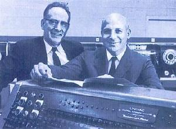

南京联合创新科学研究所
NanJing United Innovative Scientific Research Institute
- 网站地图 |
- 联系我们 |
- English
- 计算机发展史
计算机发展史
计算机于1946年问世，有人说是由于战争的需要而产生的，我们认为计算机产生的根本动力是人们为创造更多的物质财富，是为了把人的大脑延伸，让人的潜力得到更大的发展。正如汽车的发明是使人的双腿延伸一样，计算机的发明事实上是对人脑智力的继承和延伸。近１０年来，计算机的应用日益深入到社会的各个领域，如管理、办公自动化等。由于计算机的日益向智能化发展，于是人们干脆把微型计算机称之为“电脑”了。
计算机产生的动力是人们想发明一种能进行科学计算的机器，因此称之为计算机。它一诞生，就立即成了先进生产力的代表，掀开自工业革命后的又一场新的科学技术革命。要追溯计算机的发明，可以由中国古时开始说起，古时人类发明算盘去处理一些数据，利用拨弄算珠的方法，人们无需进行心算,通过固定的口诀就可以将答案计算出来。这种被称为“计算与逻辑运算”的运作概念传入西方后，被美国人加以发扬光大。直到十六世纪,发明了一部可协助处理乘数等较为复杂数学算式的机械，被称为“棋盘计算器”，但这时期只属于纯计算的阶段,要到十九世纪才有急速的发展。
在第二次世界大战中，美国政府寻求计算机以开发潜在的战略价值。这促进了计算机的研究与发展。1944年霍华德.艾肯(1900-1973)研制出全电子计算器，为美国海军绘制弹道图。这台简称 Mark I 的机器有半个足球场大，内含500英里的电线，使用电磁信号来移动机械部件，速度很慢(3-5秒一次计算)并且适应性很差只用于专门领域，但是，它既可以执行基本算术运算也可以运算复杂的等式。
1946年2月14日，标志现代计算机诞生的ENIAC(The Electronic Numerical Integrator And Computer)在费城公诸于世。ENIAC代表了计算机发展史上的里程碑，它通过不同部分之间的重新接线编程，还拥有并行计算能力。ENIAC由美国政府和宾夕法尼亚大学合作开发，使用了18，000个电子管，70，000个电阻器，有5百万个焊接点，耗电160千瓦，其运算速度比Mark I快1000倍，ENIAC是第一台普通用途计算机。 40年代中期，冯.诺依曼(1903-1957)参加了宾夕法尼亚大学的小组，1945年设计电子离散可变自动计算机EDVAC(Electronic Discrete Variable Automatic Computer)，将程序和数据以相同的格式一起储存在存储器中。这使得计算机可以在任意点暂停或继续工作，机器结构的关键部分是中央处理器，它使计算机所有功能通过单一的资源统一起来。
第一台计算机是美国军方定制，专门为了计算弹道和射击特性表面而研制的，承担开发任务的“莫尔小组”由四位科学家和工程师埃克特 、莫克利、戈尔斯坦、博克斯 组成。
世界上第一台电子管计算机ENIAC(图中左为莫奇利）第一代计算机的特点是操作指令是为特定任务而编制的，每种机器有各自不同的机器语言，功能受到限制，速度也慢。另一个明显特征是使用真空电子管和磁鼓储存数据。第一台电子管计算机（ENIAC)占地170平方米，重30吨，有1.8万个电子管，用十进制计算，每秒运算5000次加法运算。
1948年，晶体管的发明大大促进了计算机的发展，晶体管代替了体积庞大电子管，电子设备的体积不断减小。1956年，晶体管在计算机中使用，晶体管和磁芯存储器导致了第二代计算机的产生。第二代计算机体积小、速度快、功耗低、性能更稳定。首先使用晶体管技术的是早期的超级计算机，主要用于原子科学的大量数据处理，这些机器价格昂贵，生产数量极少。
- 上一页
- 1
- 2
- 下一页
- 确认跳转
南京联合创新科学研究所
NanJing United Innovative Scientific Research Institute
网站备案号：苏ICP备17036492号-1
地址：南京市江宁区南佑路7号千人专家大厦4016联系电话：025-5271 7672邮箱地址：hr.operation@divemath.com